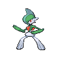

Gallade appears on 19 of 1799 Pokémon Champions VGC tournament teams in the backtwo archive (1% usage, Reg M-A and Reg M-B). The most common item is Choice Scarf (26% of Gallade sets) and the most common ability is Sharpness. Its most frequent teammate is Farigiraf (42% of its teams).
Open Gallade in the full app →| Team | Player | Event | Result | Reg | Date |
|---|---|---|---|---|---|
| Charalampos Frimas' Turin SPE 2026 Top 64 Team | Charalampos Frimas | Turin SPE 2026 | 59th | M-A | 7 Jun 2026 |
| anboxing's Turin SPE 2026 Team | anboxing | Turin SPE 2026 | 591st | M-A | 7 Jun 2026 |
| OHKO's Camerupt HTR Team | OHKO | - | — | M-A | 24 May 2026 |
| dodoriosiriru's Glimmora Floette Team | Hijito Kihara | - | — | M-A | 16 May 2026 |
| soramitu's Ranked Season M-1 52nd Place Team | Yasuharu Shimizu | Ranked Season M-1 | 52nd | M-A | 13 May 2026 |
| toracado2025's Ranked Season M-1 54th Place Team | toracado2025 | Ranked Season M-1 | 54th | M-A | 13 May 2026 |
| clefablepoke's Ranked Season M-1 210th Place Team | clefablepoke | Ranked Season M-1 | 210th | M-A | 12 May 2026 |
| semcolon's Global Challenge I 2026 Team | semcolon | Global Challenge I 2026 | 1080th | M-A | 6 May 2026 |
| trickrubyvgc's Monotype Tour Runner Up Team | trickrubyvgc | Monotype Tour | Runner Up | M-A | 4 May 2026 |
| n1ghtm2re's Banette Scovillain Team | n1ghtm2re | - | — | M-A | 18 Apr 2026 |
| LenVGC's Scovillian Gallade Team | Alex Soto | - | — | M-A | 15 Apr 2026 |
| GustavoMVP_'s Gengar Gallade Team | GustavoMVP_ | - | — | M-A | 11 Apr 2026 |
Showing 12 of 19 teams. See all 19 in the full app →
Already running Gallade and want the rest of the six? The team finder takes the Pokémon you have and ranks every tournament team by how many of your picks it matches. Or run the numbers in the damage calculator — Champions-accurate, with Mega Evolution, Stat Points, weather, terrain and spread reduction.